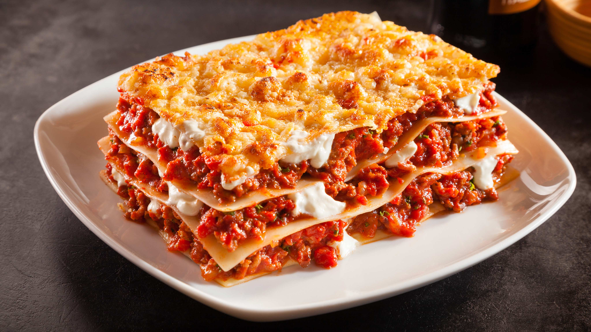

Home
Lasagna

A Yummy and Delicious Lasagna
Lasagna is a classic Italian pasta dish made by baking layers of pasta sheets, sauce, cheese, and other fillings in a casserole dish. While its exact origin is debated, it has been a staple of Italian cuisine since the Middle Ages.
Ingredients
- Lasagna noodles
- Ground meat (often a mix of beef and Italian sausage)
- Ricotta cheese
- Shredded mozzarella cheese
- Grated Parmesan cheese
- Eggs
- Tomato sauce (can be from canned tomatoes, tomato paste, or marinara sauce)
- Onion
- Garlic
- Olive oil
- Italian herbs (such as oregano and basil)
- Salt and black pepper
- Béchamel sauce (butter, flour, and milk) (in some traditional variations)
Steps
- Make the meat sauce: Sauté onion and garlic in olive oil, then brown the ground beef and Italian sausage. Stir in the tomato sauce and seasonings, and simmer.
- Make the cheese filling: Mix ricotta, eggs, and Parmesan cheese together in a bowl.
- Pre-cook the noodles (if using): Boil lasagna noodles according to package directions until al dente, or use no-boil noodles.
- Assemble the lasagna: Spread a thin layer of meat sauce on the bottom of a baking dish. Add a layer of noodles, followed by a layer of the ricotta mixture, then more meat sauce, and sprinkle with mozzarella cheese. Repeat layers until ingredients are used, ending with sauce and a final layer of mozzarella and Parmesan.
- Add béchamel (optional): If using, layer the béchamel sauce between some of the other layers.
- Bake the lasagna: Cover with foil and bake at 375°F (190°C) for 45 minutes, then uncover and bake for another 15 minutes until bubbly and golden.
- Rest and serve: Let the lasagna rest for 10-15 minutes before cutting.